Toyota is a Japanese automotive powerhouse renowned for its reliability, cutting-edge technology, and fuel efficiency.
Founded in 1937, Toyota has revolutionized the global automotive industry with innovations like the Toyota Production System and hybrid technology.
From iconic sports cars like the Supra to dependable sedans and hybrid pioneers like the Prius, Toyota continues to lead in sustainability, performance, and quality.
Kiichiro Toyoda (Founder)
As of 2025, the CEO of Toyota is Koji Sato, steering the company towards next-generation mobility,
sustainability, and electrification. Under his leadership, Toyota continues to expand its hybrid,
electric, and hydrogen-powered vehicle lineup, focusing on cutting-edge technology, carbon neutrality,
and autonomous driving innovations while maintaining its reputation for quality, reliability, and
efficiency.
Koji Sato (CEO)
Toyota has a deep-rooted history in motorsports, particularly in Super GT, the World Endurance
Championship (WEC), and rally racing, where the Toyota Gazoo Racing (GR) Team has established itself
as a dominant force. With a strong legacy of engineering excellence, the team is dedicated to
developing high-performance, aerodynamically advanced race cars that compete at the highest levels
of motorsport. Focused on innovation, precision, and strategic excellence, Toyota aims to achieve
consistent victories and reinforce its reputation as a powerhouse in the racing world.
Toyota has a rich history in motorsport, with legendary drivers contributing to its racing heritage.
The legendary actor Keanu Reeves make his debut in racing world in Toyota GR86
The brand has achieved significant success in endurance racing, including multiple victories at the
prestigious Le Mans 24 Hours, as well as dominance in Super GT and World Rally Championship (WRC).
Toyota’s race cars, such as the iconic Toyota GR Corolla and the GR Supra GT500, have cemented its
reputation for performance, reliability, and cutting-edge technology on some of the world's most challenging circuits.
Toyota's current road cars are renowned for their blend of performance, innovation, and reliability,
catering to a wide range of drivers. Iconic models like the GR Supra, GR86, and Corolla GR highlight
Toyota’s dedication to high-performance driving, while hybrid and electric models like the Prius, Mirai,
and bZ4X showcase the brand’s leadership in sustainable mobility and cutting-edge technology. With a
focus on power, efficiency, aerodynamics, and driver engagement, Toyota continues to push boundaries
in sports cars, performance engineering, hybrid technology, and next-generation electrification, setting
new standards for the global automotive industry.
Here are some of Toyota's greatest creations :
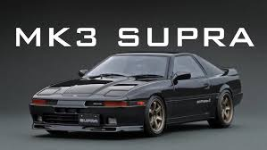
The Toyota Supra is a legendary sports car known for its powerful performance, iconic design, and
rich motorsport heritage. From the classic A70 and A80 models to the latest A90 Supra, the
Toyota Supra has always been a symbol of high-performance driving and precision engineering.
Production: 1978-Present
Engine: 3.0L Turbocharged I6
Power: 400 HP
0-100 kph: 3.2 seconds
Top Speed: 315 km/h
Type: Sports Car
Notable Feature: Rear-wheel-drive(RWD), Advanced Suspension System
The Toyota 86 is a legendary sports car known for its drift-friendly rear-wheel-drive layout and
turbocharged performance. Popular among drift enthusiasts and tuners, the 86 has become an icon in the
world of motorsport and car culture. It is a lightweight, rear-wheel-drive sports coupe that became a drifting
legend.
Production: 1969-Present
Engine: 3.0L Twin-Turbo V6
Power: 400 HP
0-100 kph: 4.5 seconds
Top Speed: 250 km/h
Type: Sports Car
Notable Feature: Ultra-Low center of gravity, Iconic Design, Turbocharged Performance
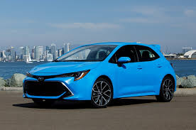
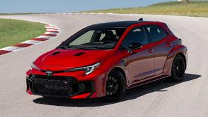
The Toyota Corolla is a legendary sports car known for its drift-friendly rear-wheel-drive layout and
turbocharged performance. Popular among drift enthusiasts and tuners, the Corolla has become an icon in the
world of motorsport and car culture. It is a lightweight, rear-wheel-drive sports coupe that became a drifting
legend.
Production: 1969-Present
Engine: 3.0L Twin-Turbo V6
Power: 400 HP
0-100 kph: 4.5 seconds
Top Speed: 250 km/h
Type: Sports Car
Notable Feature: Ultra-Low center of gravity, Iconic Design, Turbocharged Performance
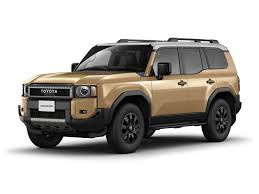
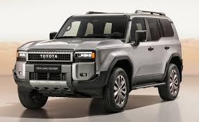
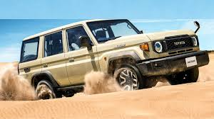
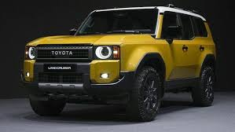
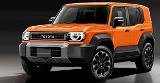
The Toyota Land Cruiser is an iconic full-size SUV renowned for its
rugged durability, off-road capability, and luxurious comfort. First
introduced in 1951, the Land Cruiser has evolved into a global legend, trusted
for its reliability in extreme conditions, from deserts to mountains. Features like
Crawl Control, Multi-Terrain Select, and Locking Differentials ensure unstoppable
off-road performance & Combines luxury and functionality, with high-end materials,
a large infotainment system, and spacious seating.
Production: 1951-Present
Engine: 5.7L V8
Power: 381 HP
0-100 kph: 6.7 seconds
Top Speed: 220 km/h
Type: Full-Size SUV
Notable Feature: Off-Road Capability, Luxury Interior, Advanced Safety Features

 Toyota
Toyota


 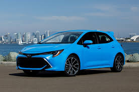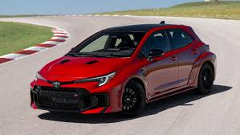
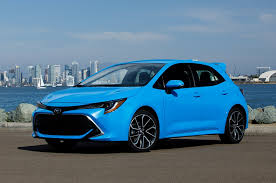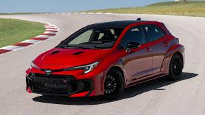 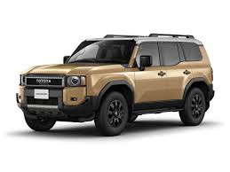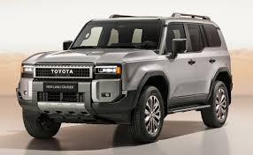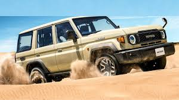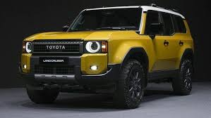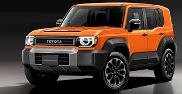
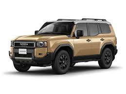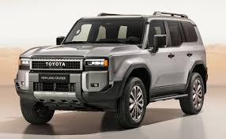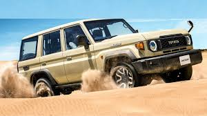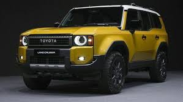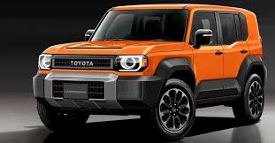